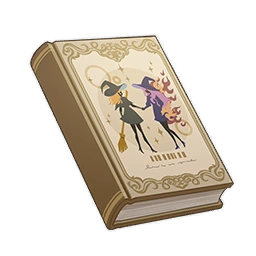

Mondstadt · Books & Literature
The Little Witch and the Undying Fire
This seven-volume Mondstadt fairy tale follows a young witch seeking an undying fire in another world; its changing handwriting and ending also make it an implicit memorial by the Hexenzirkel.

A Seven-Volume, Handwritten Fairy Tale
The Little Witch and the Undying Fire is a seven-volume Mondstadt collection released in Version 4.7. The note repeated in every volume says that the printed binding is polished but the pages are handwritten and appear to have more than one author.
Volume I introduces the frame story: a young witch must find an “undying fire” as the final trial for her witch’s license. The volumes use humor, fantasy, and different narrative voices rather than presenting a history of Teyvat.
The Little Witch’s Journey
The young witch travels from the westernmost part of a separate “magic continent.” Her exam takes her through an astrologer’s lecture, a demon-hunting group, an encounter with the mimic demon king, and several absurd trials. She is ultimately told that she failed to obtain her license.
When she returns home, her friend Octavia reports that the cosmos may soon end and that the trials have been suspended. The little witch then finds an old witch at the end of her life, takes the flame that remains, and sets out to carry it across the universe.
The Witches Behind the Pages
The volume’s handwriting, initials, jokes, and character parallels point to Hexenzirkel members as its contributors: Alice, Barbeloth, Rhinedottir, I. Ivanovna N., Nicole, and Octavia are associated with Volumes I–VI. Volume VII reads as a work Andersdotter began and Alice finished after her death. These identifications rely on in-book clues rather than a plain author list printed in the collection.
The old witch is never named. The story’s language about a witch who felt unequal to her companions and left behind stories that contain many worlds strongly suggests Andersdotter, the deceased Story-Witch, but the book leaves that identity implicit.
A Story Set Beyond Teyvat
Volume II’s astrologer discusses “seven archons,” virtuals, and a “dark sun” while explicitly speaking of other worlds. The tale itself is set on the magic continent, not in Teyvat, so those passages are not a roster or prophecy about Teyvat’s Archons.
The book works at two levels: a strange adventure about an impossible witch’s exam and a memorial for a departed member of the Hexenzirkel. Its cosmological-sounding vocabulary belongs to the fairy tale’s otherworldly setting unless another source independently connects it to Teyvat.
This is an original CoreGG reading guide, not an official HoYoverse article or a reproduction of the game text. Source links below identify the records used so you can check the original context.
Sources & references
Check these sources for the original game text and reference trail.